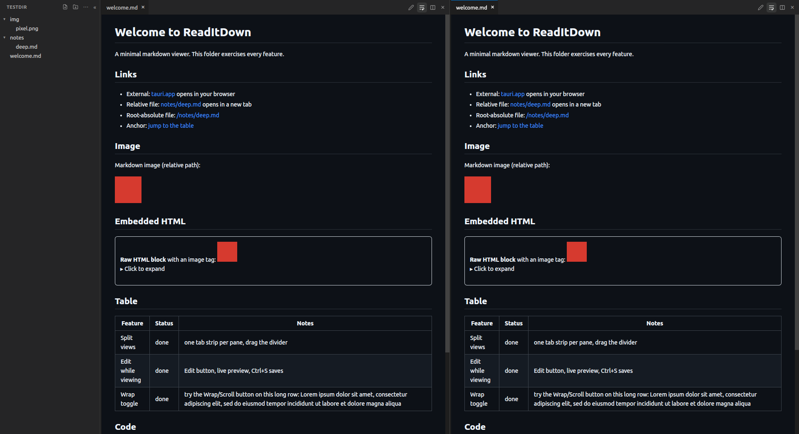

A minimal, fast markdown viewer for Linux and macOS. Split views, edit with live preview, VS Code dark look.

Open files in tabs, split the window into panes, drag dividers to resize. One tab strip per pane.
CodeMirror editor side by side with the rendered preview. It updates as you type; Ctrl+S saves.
Browse any folder, create and delete files and folders, all from a sidebar you can resize or hide (Ctrl+B).
Web links open your browser. Relative .md links open in a tab. Images and embedded HTML just render.
Wrap long lines in paragraphs, tables, and code - or cut off with a horizontal scrollbar. Toggle per pane.
Built with Tauri 2 and Svelte 5. One ~14 MB binary that starts instantly and detaches from your terminal.
Build from source (needs Rust and Node.js):
# clone and build git clone https://github.com/khanhnd61-vr/readitdown cd readitdown npm install npm run tauri build # Ubuntu/Debian: install the package it produced sudo apt install ./src-tauri/target/release/bundle/deb/ReadItDown_0.1.0_amd64.deb
Linux needs the WebKitGTK dev packages to build; macOS just needs Xcode command line tools. See the README for the exact list, plus rpm/AppImage and macOS artifacts.
readitdown # open the app readitdown . # open the current folder readitdown ~/notes # open a specific folder
The command returns your prompt immediately - the app runs detached.